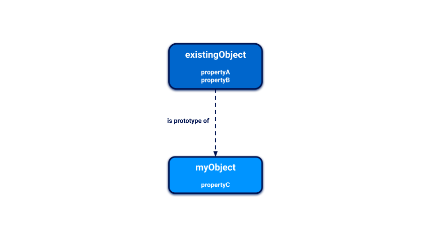
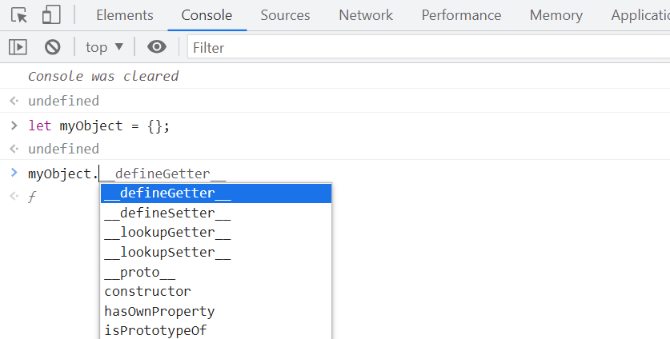
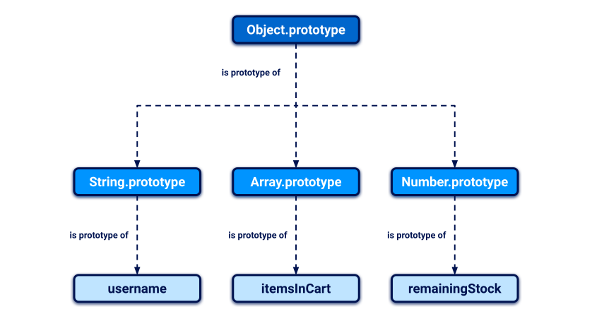

JavaScript prototypes and inheritance
JavaScript uses a prototypal inheritance model, which is quite different from the class-based model used by many other languages. In this section, we'll provide a basic overview of how this works, which should give you enough of an understanding to follow our learning materials on prototype pollution vulnerabilities.
What is an object in JavaScript?
A JavaScript object is essentially just a collection of key:value pairs known as "properties". For example, the following object could represent a user:
const user = {
username: "wiener",
userId: 01234,
isAdmin: false
}You can access the properties of an object by using either dot notation or bracket notation to refer to their respective keys:
user.username // "wiener"
user['userId'] // 01234As well as data, properties may also contain executable functions. In this case, the function is known as a "method".
const user = {
username: "wiener",
userId: 01234,
exampleMethod: function(){
// do something
}
}The example above is an "object literal", which means it was created using curly brace syntax to explicitly declare its properties and their initial values. However, it's important to understand that almost everything in JavaScript is an object under the hood. Throughout these materials, the term "object" refers to all entities, not just object literals.
What is a prototype in JavaScript?
Every object in JavaScript is linked to another object of some kind, known as its prototype. By default, JavaScript automatically assigns new objects one of its built-in prototypes. For example, strings are automatically assigned the built-in String.prototype. You can see some more examples of these global prototypes below:
let myObject = {};
Object.getPrototypeOf(myObject); // Object.prototype
let myString = "";
Object.getPrototypeOf(myString); // String.prototype
let myArray = [];
Object.getPrototypeOf(myArray); // Array.prototype
let myNumber = 1;
Object.getPrototypeOf(myNumber); // Number.prototypeObjects automatically inherit all of the properties of their assigned prototype, unless they already have their own property with the same key. This enables developers to create new objects that can reuse the properties and methods of existing objects.
The built-in prototypes provide useful properties and methods for working with basic data types. For example, the String.prototype object has a toLowerCase() method. As a result, all strings automatically have a ready-to-use method for converting them to lowercase. This saves developers having to manually add this behavior to each new string that they create.
How does object inheritance work in JavaScript?
Whenever you reference a property of an object, the JavaScript engine first tries to access this directly on the object itself. If the object doesn't have a matching property, the JavaScript engine looks for it on the object's prototype instead. Given the following objects, this enables you to reference myObject.propertyA, for example:

You can use your browser console to see this behavior in action. First, create a completely empty object:
let myObject = {};
Next, type myObject followed by a dot. Notice that the console prompts you to select from a list of properties and methods:

Even though there are no properties or methods defined for the object itself, it has inherited some from the built-in Object.prototype.
The prototype chain
Note that an object's prototype is just another object, which should also have its own prototype, and so on. As virtually everything in JavaScript is an object under the hood, this chain ultimately leads back to the top-level Object.prototype, whose prototype is simply null.

Crucially, objects inherit properties not just from their immediate prototype, but from all objects above them in the prototype chain. In the example above, this means that the username object has access to the properties and methods of both String.prototype and Object.prototype.
Accessing an object's prototype using __proto__
Every object has a special property that you can use to access its prototype. Although this doesn't have a formally standardized name, __proto__ is the de facto standard used by most browsers. If you're familiar with object-oriented languages, this property serves as both a getter and setter for the object's prototype. This means you can use it to read the prototype and its properties, and even reassign them if necessary.
As with any property, you can access __proto__ using either bracket or dot notation:
username.__proto__
username['__proto__']
You can even chain references to __proto__ to work your way up the prototype chain:
username.__proto__ // String.prototype
username.__proto__.__proto__ // Object.prototype
username.__proto__.__proto__.__proto__ // nullModifying prototypes
Although it's generally considered bad practice, it is possible to modify JavaScript's built-in prototypes just like any other object. This means developers can customize or override the behavior of built-in methods, and even add new methods to perform useful operations.
For example, modern JavaScript provides the trim() method for strings, which enables you to easily remove any leading or trailing whitespace. Before this built-in method was introduced, developers sometimes added their own custom implementation of this behavior to the String.prototype object by doing something like this:
String.prototype.removeWhitespace = function(){
// remove leading and trailing whitespace
}Thanks to the prototypal inheritance, all strings would then have access to this method:
let searchTerm = " example ";
searchTerm.removeWhitespace(); // "example"What next?
Now that you have a basic understanding of how prototypes and inheritance work in JavaScript, let's take a look at how implementation flaws can lead to a security vulnerability known as prototype pollution: